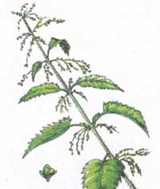
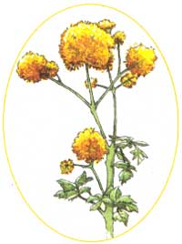
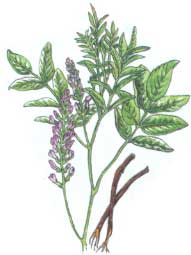

Natural alternatives to treat seasonal sneezing.
While most of us enjoy the green grass and flora of the summer months, about 20% of the population will struggle to some degree with watery eyes and bouts of sneezing. Hay fever, or allergic rhinitis, is caused by an allergic reaction to tree and/or grass pollens, and the accompanying symptoms are usually experienced with the change of seasons. If you begin to experience symptoms in early spring, chances are you're reacting to tree pollens. If you acquire a sneezing habit during the summer months, you're probably allergic to grass and weed pollens. If hay fever attacks begin in mid-March and last through late November, you're probably allergic to airborne fungus particles.
An allergic response is driven by excessive amounts of inflammatory agents (referred to as "mediators") being released from tissue mast cells. When an allergen is introduced, its offending particles bind to antibodies produced within the mast cells which promote a defensive response. The mast cells then produce and release inflammatory chemicals, such as histamine, which cause bronchial constriction, mucus discharge, and other familiar symptoms, in an attempt to rid the body of the allergen. One might be tempted to think that a person suffering from hay fever has a faulty immune system, but actually it's a sign that the person's immune system is working overtime. In fact, according to Andrew Weil, M.D., an allergy is really an example of "misplaced immunity." Dr. Weil also believes that an allergic reaction to airborne particles is a learned response of the immune system. In his book, Natural Health, Natural Medicine (Houghton Mifflin, 1998), Dr. Weil contends that, "The goal of treatment should be to convince the immune system that it can coexist peacefully with these substances. Conventional medicine does not achieve this goal."
Antihistamines (and sometimes steroids) are the conventional course of treatment for seasonal allergies. However, antihistamines merely suppress physical symptoms and fail to address the underlying cause. Allergy, and asthma for that matter, can often be attributed to common food allergies, a malfunction in fatty acid metabolism, or even low stomach acid. Many people are under the impression that antihistamines inhibit the production of histamine, as the generic name suggests. But according to Michael Murray, N.D., "Antihistamines do not block the release of histamine. Instead, they block the action of histamine at receptor sites." They also perpetuate a cycle of immune over-responsiveness, allergic reaction, and a need for more medicine to alleviate symptoms. Furthermore, these powerful synthetics invade the brain and nervous systems to produce unpleasant side effects ranging from drowsiness to depression. For some people (as is the case with this writer), antihistamines can cause even more alarming and potentially dangerous symptoms, such as extreme excitability and heart palpitations.
Are there natural alternatives to treating seasonal allergies? There are indeed. Adhering to a healthful diet, making any necessary lifestyle changes, and implementing the following herbs can help bring the relief you seek in a safe and effective manner. As with any medication, botanical or otherwise, before pursuing a course of self-treatment, always consult your physician if you are pregnant, nursing a baby, or being treated for any serious condition.
Nettle (Urtica dioica): Many people swear by nettle for relieving hay fever, including Dr. Weil, who uses the herb himself. In 1990, the National College of Naturopathic Medicine in Portland, Oregon, conducted a double-blind study of the efficacy of a freeze-dried preparation of stinging nettle on allergic rhinitis. The group treated with the nettle preparation fared moderately better than their placebo-treated counterparts. A decoction made of the leaves or roots is said to ease bronchial constriction.
Oddly enough, another species of nettle (U. urens) is quite the allergen in itself. The plant and stinging hairs of this species contain high levels of both leukotrienes and histamine.
Ephedra (Ephedra sinicia): The Chinese species of ephedra, commonly called mahuang, has been used to treat various inflammatory disorders for more than 5,000 years. The active constituent of the herb is ephedrine, an alkaloid proven effective in treating hay fever and even mild to moderate asthma. Today, a synthetic version of this alkaloid, pseudoephedrine, can be found in numerous non-prescription cold and allergy preparations.
Prolonged use of the herb, however, can interfere with adrenal gland function and its therapeutic benefit will decline. For this reason, ephedra is best used in combination with one or more of the herbs suggested here, or under the careful watch of a qualified health care practitioner. It should also be noted that ephedrine raises both systolic and diastolic blood pressure, and may be unsuitable for certain individuals.
Angelica (Angelica sinensis): Angelica, also known as dong quai, is another popular herb in Chinese medicine and has a long history of use. Studies on the effects of angelica extract on antibody production reveal a decrease in allergic antibody production levels, which can be up to ten times greater than normal in allergy sufferers. Fewer antibodies result in the reduced production and release of anaphylaxis from mast cells, another mediator akin to histamine. It is believed this action is due to the presence of coumarins.
Licorice (Glycyrrhiza glabra): In the late 1950s, researchers determined that the action of licorice is comparable to cortisone in that it stimulates the adrenals, inhibits inflammation, and relieves symptoms of allergy, but without the harmful effects from commonly prescribed steroids. Another mechanism of licorice is to increase the half-life of cortisol (a hormone secreted by the adrenal glands), thereby increasing its anti-inflammatory action. Like angelica, licorice also contains coumarins, agents with a demonstrated ability to suppress mediator release from mast cells.
Habitual use of licorice can result in a loss of potassium, and it may be necessary to supplement the diet or increase the consumption of potassium-rich foods. Another consideration is that the habitual intake of licorice can promote the retention of sodium.
Chinese Skullcap (Scutellaria baicalensis): This herb contains high levels of flavonoids that behave similarly to disodium cromoglycate, a drug often prescribed for asthmatics. The principal action of these flavonoids is to deter the production of leukotrienes, the presence of which promotes bronchial constriction 1,000 times greater than histamine.
Flavonoids (sometimes called bioflavonoids), are a group of compounds common to most plants and to which many fruits and vegetables owe their color. Of particular interest is quercetin, a flavonoid that prevents the production of histamine and other inflammatory agents. Flavonoids offer the added benefit of protection from free-radical damage. Flavonoids can be found in significant levels in many herbs (including licorice), onions, garlic, parsley, legumes, citrus fruits, and berries.
If you consume animal products, you may want to consider eating less meat or, if possible, switching to an all vegan diet during the months ahead. At the very least, cutting down on dairy products during this time will help. As previously mentioned, leukotrienes produce a good deal of allergy response, even more so than histamine. Leukotrienes are synthesized by the presence of arachidonic acid, a fatty acid derived exclusively from animal products.
One last word... If in spite of trying every natural avenue to eliminate-or at least reduce-your seasonal allergy symptoms, you may benefit from a visit to your health care practitioner to discuss the possibility of having insufficient stomach acid. The presence of enough hydrochloric acid (HCI) and pepsin are crucial for proper digestion and mineral absorption, and may play a direct role in overcoming allergies. Studies have shown that asthma and allergy sufferers tend to have low levels of HCI but show improvement with supplementation. Note: supplementation of HCI should only be administered by a qualified health care practitioner.
The following dosages are recommended by Michael T. Murray, N.D., and Joseph Pizzorno, N.D., authors of Encyclopedia of Natural Medicine (Prima, 1991).
Ephedra: 1 to 2 tsp dried herb steeped in boiling water for 10 minutes and taken as a tea 3 times per day, or the capsule equivalent of 12.5 to 25 mg ephedrine.
Licorice, angelica, nettle, and Chinese skullcap:
-1 to 2 grams dried root, prepared as a tea - ¼ to ½ tsp fluid extract in 1 cup water - 250 to 500 mg in capsule form
|
JOHN TERENCE TURNER/FPG |
 ILLUSTRATIONS: BELLA HOLLINGWORHT |
 |
|
 |
|
|